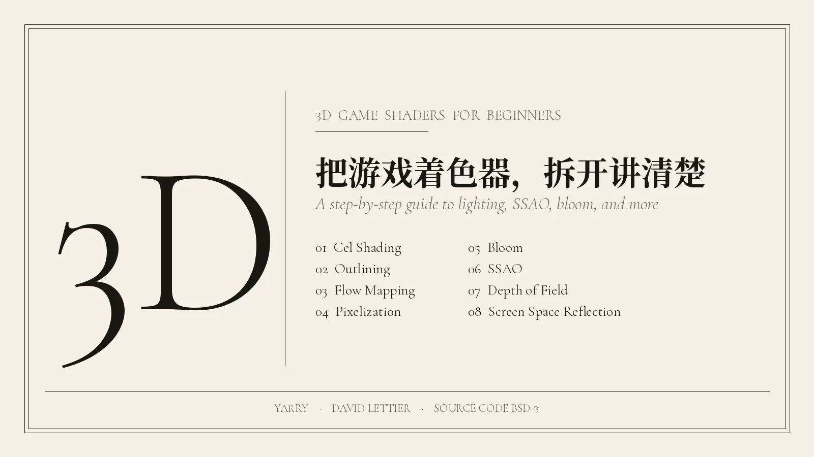

Yarry 觉得，独立做 HD-2D、卡通渲染或复古像素风游戏时，真正卡住画面上限的，往往不是贴图细不细，而是屏幕空间后处理和表面着色器怎么叠在一起。他把 David Lettier 的开源教程《3D Game Shaders For Beginners》介绍给读者：用标准 GLSL 把一条条常用的表面光照和后处理通道拆开，配上推导和完整源码。仓库在收录时约有 20,082 星、1,492 次分叉。演示用的是 Panda3D。请注意，开放许可只覆盖源码文件，文档和配图并未授权转载。
.cxx、.vert、.frag 源码以 BSD 3-Clause 许可发布（Copyright (c) 2019, David Lettier）；文档、配图及其他部分作者写明未授权使用，本页不转载 README、文档与官方演示画面。封面为 typographic 设计。原帖所附 14 秒视频见原文。
这是什么
2026 年 11 月 27 日上午，Yarry（@aiiii498）在 X 发了一篇长文，推荐 David Lettier 在 2019 年开源的教程仓库 lettier/3d-game-shaders-for-beginners。教程的英文名是《3D Game Shaders For Beginners》。作者在简介里写，这是一组着色技术，读者可以把学到的东西迁到自己使用的技术栈——Godot、Unity、Unreal，或其他环境。演示本身用 Panda3D 做胶水，着色器写成 GLSL。
Yarry 的重点放在独立游戏的画面质感。他的原话是：最容易卡住美术上限的，「往往不是贴图精度，而是屏幕空间后处理与表面着色器的组合质感」。他觉得这套教程把常用的表面光照和屏幕空间 Pass 拆成了「手把手的数学推导与完整 GLSL 源码」，不绑在某一家商业引擎的黑盒上，因此迁到 Godot 4、Unity URP 或 WebGL「都非常顺滑」。后面这句是他的判断，不是仓库自己的承诺。
他在帖里附了一段 14 秒视频，并写明是按 1:1 从官方在线指南的实机渲染对比里剪出来的，画面致谢原作者。本页没有转载这段视频。他随后回帖，列出了仓库、在线指南和一份技术名单。
收录当天，GitHub 仓库页显示约 20,082 星、1,492 次分叉。原帖写的是 20,078 星、1,492 次分叉，星数会随时间变化。仓库创建于 2019 年 5 月 12 日；当前默认分支上能看到的最近一次提交，日期是 2021 年 8 月 29 日。
仓库里有哪些章节
仓库的章节目录共 33 篇。前面 8 篇讲环境搭建、坐标系、GLSL、渲染到纹理、贴图和光照基础；从 Blinn-Phong 到伽马校正的 25 篇，是一条条具体的表面光照与屏幕空间技术。原帖写「30 多套」，是作者的概括。
下面这 25 篇技术章节的英文名取自仓库目录，中文是本页的对照，不是教程正文的翻译。
| 章节 | 中文对照 | 章节 | 中文对照 |
|---|---|---|---|
| Blinn-Phong | Blinn-Phong 光照 | Screen Space Reflection | 屏幕空间反射 |
| Fresnel Factor | 菲涅尔因子 | Screen Space Refraction | 屏幕空间折射 |
| Rim Lighting | 边缘光 | Foam | 泡沫 |
| Cel Shading | 卡通着色 | Flow Mapping | 流向图 |
| Normal Mapping | 法线贴图 | Outlining | 描边 |
| Deferred Rendering | 延迟渲染 | Depth Of Field | 景深 |
| Fog | 雾 | Posterization | 色调分离 |
| Blur | 模糊 | Pixelization | 像素化 |
| Bloom | 泛光 | Sharpen | 锐化 |
| SSAO | 屏幕空间环境光遮蔽 | Dilation | 膨胀 |
| Motion Blur | 运动模糊 | Film Grain | 胶片颗粒 |
| Chromatic Aberration | 色差 | Lookup Table (LUT) | 调色查找表 |
| Gamma Correction | 伽马校正 |
官方交互式图文教程在 lettier.github.io/3d-game-shaders-for-beginners。Yarry 还附了一段给 Claude Code 或 Codex 的提示词，让代理参照这套 GLSL，在 Godot 4 里写一套可挂载的卡通像素风材质和后处理。他说「就能一键生成」，这是原文的说法，本页没有复现。
许可
仓库 README 的 License 一节写明：所附许可证只适用于软件部分，具体是 .cxx、.vert 和 .frag 源码文件；「No other portion of 3D Game Shaders For Beginners has been licensed for use.」演示目录里的两份 LICENSE 文本均为 BSD 3-Clause License，版权行是 Copyright (c) 2019, David Lettier。因此，源码可以按 BSD 3-Clause 使用；教程正文、配图、字体和演示画面并不在该许可范围内。本页只做导读，并收录 Yarry 自己的长文；不转载 README 全文、章节正文，也不使用官方图片。附录仅收录源码部分的许可证原文。
相关阅读
- 「动画十二法则」：把迪士尼的手艺写成 144 份技能——同样是把一项老手艺拆开，写成可以对照着学的材料。
- 「Cloud Pass」：用鱼眼和视差做出的无尽摩托骑行——浏览器里的镜头和后处理气味，三条开源技能可直接阅读。
- Ultra Water：在浏览器里算出一片海——另一种把水面效果写成可运行代码的路子。
- pixelfx：232 个代码像素特效——偏像素风的后处理与特效集合。
- 「Brushwild」：用圆珠笔和彩铅画出的开放世界 RPG——同样面向独立游戏画面，走的是程序化画风，不是着色器教程。
- 「Blueprint」：把一张草图建成可以走进去的房子——把参考交给 Claude Code，在三维里一件一件搭起来。
长文原文
作者 Yarry（@aiiii498）· 2026-11-27 11:38（新加坡时间，UTC+8）· 原文已是中文，此处按段落整理，提示词里的短链接已还原为仓库和指南地址。
⚡ 独立做 HD-2D、卡通渲染或复古像素风游戏时，最容易卡住美术上限的往往不是贴图精度，而是屏幕空间后处理与表面着色器的组合质感。GitHub 上拿下 20,078 Star 的开源着色器实战宝典 3D Game Shaders For Beginners（作者 David Lettier），把 30 多套工业级游戏最常用的表面光照与屏幕空间 Pass 拆成了手把手的数学推导与完整 GLSL 源码，无论你做 2D 像素后处理还是 3D 风格化场景都能直接抄作业。
🎞️ 上面的 14 秒 1:1 实测混剪全部取自官方在线指南的实机渲染对比演示：
- 0.0s–5.0s 九宫格同屏展示岸线水花泡沫（Foam）、色阶色调分离（Posterization）、形态学膨胀（Dilation）、镜头色差（Chromatic Aberration）、屏幕像素化采样（Pixelization）、三阶卡通色带光照（Cel Shading）、切线空间法线贴图（Normal Mapping）、深度大气雾（Fog）以及高光泛光（Bloom）。
- 5.0s–8.0s 四宫格近景特写聚焦散景景深变焦（Bokeh Depth of Field）、屏幕空间水体折射（Screen Space Refraction）、屏幕空间水面反射（SSR）与深度法线双重边缘墨线勾边（Outlining）。
- 8.0s–14.0s 五段全屏快切依次呈现 UV 流向图驱动的瀑布湍流（Flow Mapping）、完整多通道风格化水车村落总览、动态焦点切换、水轮浪花深度交界泡沫以及自适应对比度锐化（Sharpen）。
🛠️ 这套仓库对独立开发者最实用的一点，是它完全不依赖特定商业引擎黑盒，而是用标准 GLSL 讲透每个渲染通道的输入输出与参数边界。从基础的 Blinn-Phong、菲涅尔边缘光（Fresnel & Rim Lighting）、调色查找表（LUT）到进阶的屏幕空间环境光遮蔽（SSAO）与延迟渲染管线（Deferred Rendering），每一章都配有直观的几何向量示意图和逐行注释的顶点/片元着色器代码，移植到 Godot 4（.gdshader）、Unity URP 或 WebGL 都非常顺滑。
🤖 把它接入 Claude Code 或 Codex 的自动化渲染移植工作流也很直接，把下面这段提示词喂给 Agent 就能一键生成对应引擎的多通道风格化材质与后处理栈：
请参考开源项目 https://github.com/lettier/3d-game-shaders-for-beginners 与在线文档 https://lettier.github.io/3d-game-shaders-for-beginners/ 中的 GLSL 实现，帮我在 Godot 4 中编写一套可直接挂载的卡通像素风多通道 Shader 组合：包含 3 阶阶梯漫反射 + 菲涅尔边缘高光的 Cel Shading 表面材质、基于深度与法线边缘检测的 Outlining 描边 Pass，以及带水岸深度交界泡沫与 UV Flow Mapping 的水面 Shader，并暴露调色盘 LUT、像素网格尺寸和泛光阈值 uniform 参数。
🐈⬛ 实机演示画面引自 David Lettier 官方开源仓库与交互文档，特此致谢原作者。
🔖 正在折腾独立游戏画面质感、HD-2D 光影或风格化 Shader 的朋友建议先收藏，调渲染管线和画面滤镜时随时能翻出来对照。
他在随后的一条回复里补充了仓库和指南的入口，并再次列举了 Cel Shading、Outlining、Pixelization、Posterization、Flow Mapping、Water Foam、Bloom、SSR、SSAO、Depth of Field 等技术。该回复同样写有 20,078 Stars / 1,492 Forks，以及「30+ 套完整游戏着色器算法与 GLSL 实现」。
附录：源码部分的 BSD 3-Clause 原文
以下文本录自仓库 demonstration/src/LICENSE 与 demonstration/shaders/LICENSE，两份内容相同。它只适用于 .cxx、.vert 和 .frag 源码，不覆盖文档和配图。
展开 LICENSE
BSD 3-Clause License
Copyright (c) 2019, David Lettier
All rights reserved.
Redistribution and use in source and binary forms, with or without
modification, are permitted provided that the following conditions are met:
* Redistributions of source code must retain the above copyright notice, this
list of conditions and the following disclaimer.
* Redistributions in binary form must reproduce the above copyright notice,
this list of conditions and the following disclaimer in the documentation
and/or other materials provided with the distribution.
* Neither the name of the copyright holder nor the names of its
contributors may be used to endorse or promote products derived from
this software without specific prior written permission.
THIS SOFTWARE IS PROVIDED BY THE COPYRIGHT HOLDERS AND CONTRIBUTORS "AS IS"
AND ANY EXPRESS OR IMPLIED WARRANTIES, INCLUDING, BUT NOT LIMITED TO, THE
IMPLIED WARRANTIES OF MERCHANTABILITY AND FITNESS FOR A PARTICULAR PURPOSE ARE
DISCLAIMED. IN NO EVENT SHALL THE COPYRIGHT HOLDER OR CONTRIBUTORS BE LIABLE
FOR ANY DIRECT, INDIRECT, INCIDENTAL, SPECIAL, EXEMPLARY, OR CONSEQUENTIAL
DAMAGES (INCLUDING, BUT NOT LIMITED TO, PROCUREMENT OF SUBSTITUTE GOODS OR
SERVICES; LOSS OF USE, DATA, OR PROFITS; OR BUSINESS INTERRUPTION) HOWEVER
CAUSED AND ON ANY THEORY OF LIABILITY, WHETHER IN CONTRACT, STRICT LIABILITY,
OR TORT (INCLUDING NEGLIGENCE OR OTHERWISE) ARISING IN ANY WAY OUT OF THE USE
OF THIS SOFTWARE, EVEN IF ADVISED OF THE POSSIBILITY OF SUCH DAMAGE.